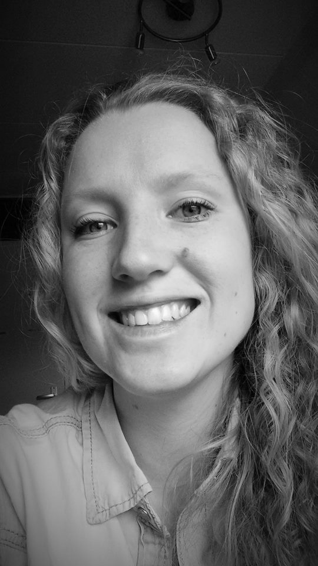

INFO ABOUT ME
Hi all. I am Michelle Pisters, a Computer Science student at the Vrije Universiteit Amsterdam.
I have always been interested in technology and computers.
I did my bachelor in Lifestyle Informatics at the VU.
Here I learned that I wanted to do some more technical study, therefore I chose to do the computer science master.
This is challenging because I don't have a computer science bachelor,
so sometimes the subjects that are given are completely new to me were my other classmates already had some courses about these subjects.
For my bachelor I did some research on semantic web technology,
which was very interesting. Also in my last year of my bachelors I started to work as JavaScript developer which was a great experience.
Here I learned to make web applications. In the future I want to be a great developer,
so I am learning some new programming languages and programming techniques to make this possible.